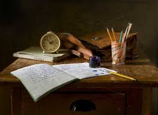
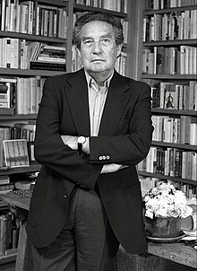

ALEJANDRO JODOROWSKY: Jodorowsky es hijo del matrimonio de emigrantes judíos ucranianos Jaime Jodorowsky Groismann y Sara Felicidad Prullansky Arcavi. La pareja de comerciantes regentaba una tienda llamada Casa Ukrania, en Tocopilla (ciudad ubicada en la región de Antofagasta).678 Tuvo una hermana mayor, la poetisa Raquel Jodorowsky (Tocopilla, 1927-Lima, 2011), que vivió en Perú desde la década de 1950. Tras vivir sus primeros diez años en Tocopilla, la familia se muda en 1939 a la comuna de Quinta Normal en la ciudad de Santiago. Jodorowsky cursó sus estudios secundarios en el Liceo de Aplicación. Comenzó sus actividades artísticas a muy temprana edad inspirado principalmente por la literatura y el cine. Publicó sus primeras poesías en torno a 1945. Pocos años después trabajó junto a poetas como Nicanor Parra y Enrique Lihn, al mismo tiempo que desarrollaba su interés por las marionetas y la pantomima. A los 17 años debutó como actor y un año después creó la tropa de pantomima Teatro Mímico, junto a Lihn, su amigo. Se matriculó en 1947 en los cursos de Filosofía y Psicología de la Universidad de Chile, pero a los dos años los abandonó. En 1948 escribió su primer texto dramático: la pieza para títeres La fantasma cosquillosa. Entre 1949 y 1953 realizó en Santiago algunos actos improvisados de corte surrealista, que luego calificará de efímeros (en México) y, a partir de 1962, efímeros pánicos en Francia. En 1950 funda el Teatro de Títeres del Teatro Experimental de la Universidad de Chile (TEUCH) y dos años después, junto a Lihn y Parra, crean el collage Quebrantahuesos, poesía mural con recortes de periódicos. Jodorowsky abandona Chile en 1953 y viaja a París para estudiar pantomima con Étienne Decroux, el profesor de Marcel Marceau. Al año siguiente se unió a la compañía de teatro de Marceau, con quien realizó giras por todo el mundo. Acude como alumno libre a los cursos que en La Sorbona imparte el filósofo Gaston Bachelard. Jodorowsky debutó en el cine en 1957 con el cortometraje mimo La Cravate, alabado por Jean Cocteau, que escribió un prólogo para este filme (la copia en celuloide de este corto estuvo perdida durante medio siglo, hasta que apareció en 2006 por azar en un desván en Alemania). Después de presentarse en México, permaneció, aunque con intervalos, hasta 1974 en ese país, donde se interesó por temas psicológicos y místicos —lo que lo llevaría a iniciarse en la psicoterapia al lado de Erich Fromm en Cuernavaca y en la meditación zen con el maestro Ejo Takata— y dirigió más de un centenar de obras de vanguardia. Durante las siguientes dos décadas, Jodorowsky creó más de cien piezas de teatro.
OCTAVIO PAZ
Octavio Paz nació el 31 de marzo de 1914, durante la Revolución mexicana. Apenas unos meses después, al unirse su padre al ejército zapatista junto con Antonio Díaz Soto y Gama, su madre lo llevó a vivir a la casa del abuelo paterno, Ireneo Paz, en Mixcoac, entonces un poblado cercano a la Ciudad de México. Ahí radicaron hasta que Octavio Paz Lozano tuvo que asilarse en Los Ángeles con la representación de Emiliano Zapata ante los Estados Unidos, cargo que mantuvo hasta 1919, año del asesinato de Zapata. En ese tiempo lo cuidaron su madre Josefina Lozano, su tía Amalia Paz Solórzano y su abuelo paterno, [Ireneo Paz] (1836-1924), un soldado retirado de las fuerzas de Porfirio Díaz, intelectual liberal y novelista. Su padre, Octavio Paz Solórzano (1883-1935), el menor de siete hermanos, trabajó como escribano y abogado para Emiliano Zapata; estuvo involucrado en la reforma agraria que siguió a la Revolución, fue diputado y colaboró activamente en el movimiento vasconcelista.456 Todas estas actividades provocaron que el padre se ausentara de casa durante largos periodos. Vida de estudiante Su educación se inició en los Estados Unidos, en donde su padre Paz Solórzano, llegó en octubre de 1916 como representante de Zapata.7 La estancia en los Estados Unidos, de casi dos años, significó para Octavio Paz el enfrentamiento con la imposibilidad de comunicarse; según recuerda Paz, en Los Ángeles sus padres lo llevaron a un colegio, «y como no hablaba ni una sola palabra de inglés le costó mucho trabajo comunicarse con sus compañeros.